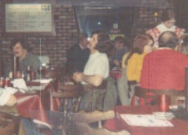
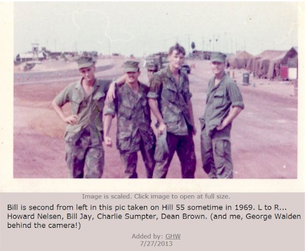
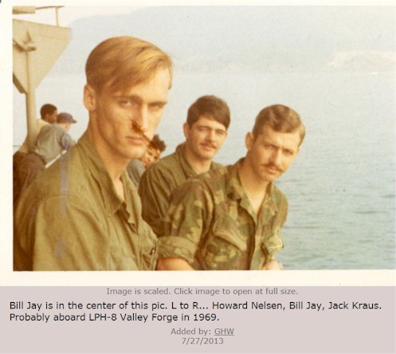

BHS 1967 Class Member
William Jay
 1967 In Memory(Obituary) |
 Boone Pizza Hut - April 1972 |
|  Lance Corporal Platoon Leader |
 Lance Corporal Platoon Leader |
| 1967 In Memory(Obituary) |
 Boone Pizza Hut - April 1972 |
|  Lance Corporal Platoon Leader |
 Lance Corporal Platoon Leader |